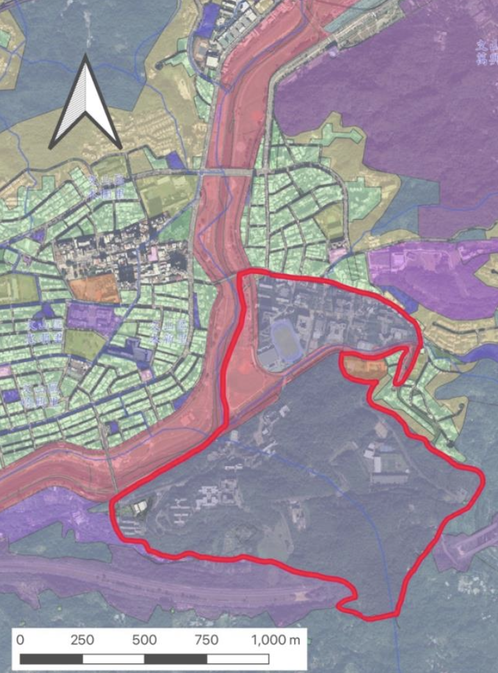

EDS International, Inc. · Planning Intern · Summer 2025
✓ Proposal accepted by NCCU
Authored a 55-page formal certification application (經營計畫書) for NCCU's campus to be recognized as a Conservation Symbiosis Area (保育共生地) under Taiwan's domestic conservation framework. The project involved international policy benchmarking, GIS spatial analysis, ecological assessment, and multi-stakeholder coordination.
Researched the UN/CBD Kunming-Montreal Global Biodiversity Framework (30×30 target) and Japan's OECM implementation through official conference reports before adapting findings to the local context
Conducted GIS-based spatial analysis using ArcGIS: satellite imagery review (Google Earth, 2021–2025), ecological corridor mapping across 1.09 km², and analysis of multiple data layers (ecological green networks, wildlife habitats, biodiversity hotspots, land use zoning)
Coordinated engagement among local communities, government agencies, and university departments to build stakeholder consensus
Proposed an environmental monitoring framework with infrared camera traps and water quality testing to establish measurable conservation baselines
Land use zoning map (臺北市土地使用分區) showing the project site boundary and surrounding land classifications

Satellite imagery overlay with proposed conservation area boundary (red outline), covering 1.09 km²
This is a working draft version of the proposal. The final version was submitted by NCCU for government certification.
AI Evaluation & User Feedback
AI Model Evaluation & RLHF Workflows
DataAnnotation · AI Training Specialist · Feb 2026 – Present
Evaluate AI model outputs through structured testing protocols, contributing to Reinforcement Learning from Human Feedback (RLHF) workflows that bridge user perspectives with technical model refinement.
Assess response quality, accuracy, logical coherence, and alignment with user expectations across diverse use cases and prompt types
Conduct side-by-side model comparisons to identify performance gaps, strengths, and failure patterns across different model versions
Write detailed, actionable feedback for development teams — documenting what works, what creates friction, and how to prioritize iteration
AI EvaluationRLHFUser ExperienceStructured TestingFeedback Analysis
Urban Planning & Fieldwork
15-Year Development Plan for Qidu District, Keelung
Planning Practice (II), NCCU · Team of 6 · Sep 2025 – Present
Contributing to a comprehensive 15-year district development plan covering land use, transportation (TOD strategies), disaster resilience, and community development for Qidu District, Keelung.
Conducted GIS-based fieldwork including spatial data collection and demographic analysis
Performed community interviews to gather qualitative data on local needs and development priorities
Contributed background analysis of local industries, demographics, and economic conditions during the pre-planning research phase
World Café Facilitation — Regional Sustainable Development
Planning Practice (I), NCCU · Table Leader · Fall 2024
Served as Table Leader for two World Café sessions on regional sustainable development, facilitating multi-stakeholder discussions and synthesizing diverse perspectives in real time.
FacilitationStakeholder EngagementQualitative Research